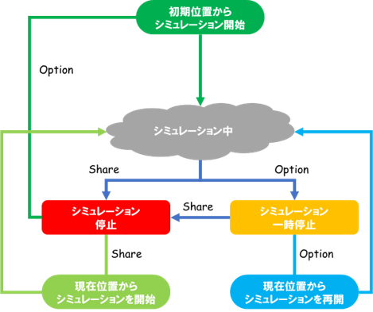
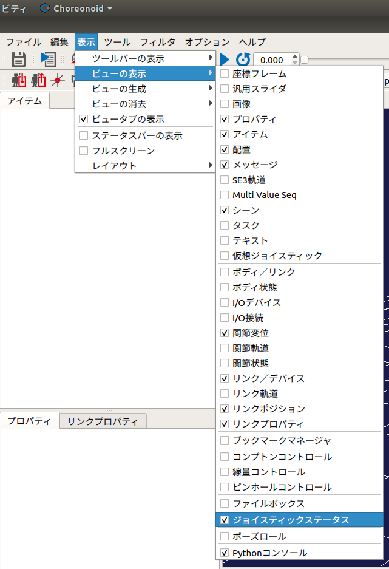

VirtualJoystick Plugin
Function 1: Controlling Simulation Status
This section explains how to start, stop, pause, and resume a simulation using a joystick.
Enabling the Feature
Follow these steps to enable this feature:
Open Options > Joystick from the menu.
Select Start Simulation (Start Button) and Open Project (Logo Button).
注釈
Start, Stop, Pause, and Resume
The controls for starting, stopping, pausing, and resuming the simulation are assigned as follows:
Start simulation from the initial position: Press the Options button once while the simulation is stopped.
Start simulation from the current position: Press the Share button once while the simulation is stopped.
Stop: Press the Share button once during a simulation or while paused.
Pause: Press the Options button once during a simulation.
Resume simulation from the current position: Press the Options button once while paused.
The state transitions for this feature are shown in the diagram below:

Loading a Project
Pressing the Logo button will open a dialog box for loading a project.
Function 2: Displaying Joystick Status
This section explains how to display the status of the joystick. This feature shows the real-time status of the sticks and buttons for a connected joystick (only /dev/input/js0 is supported). Additionally, when using this feature, you can input joystick commands via the keyboard, similar to the "Virtual Joystick" function.
Displaying Input Status
Follow the steps below to display the view that shows the joystick status:
Select View > Show View > Virtual Joystick 2 from the main menu.
The image below shows the Joystick Status view:
